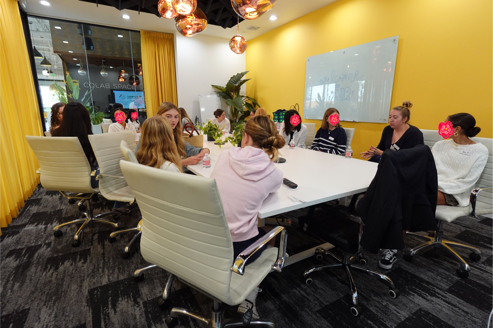
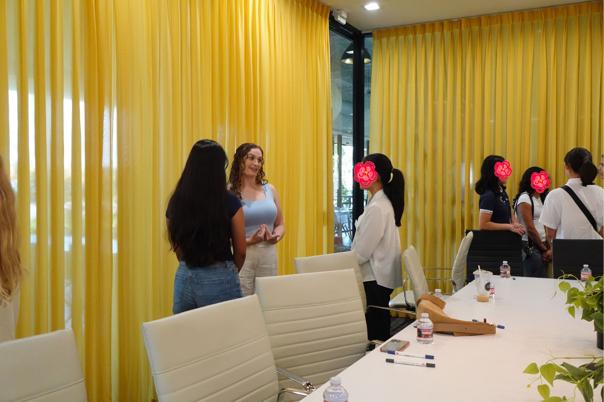
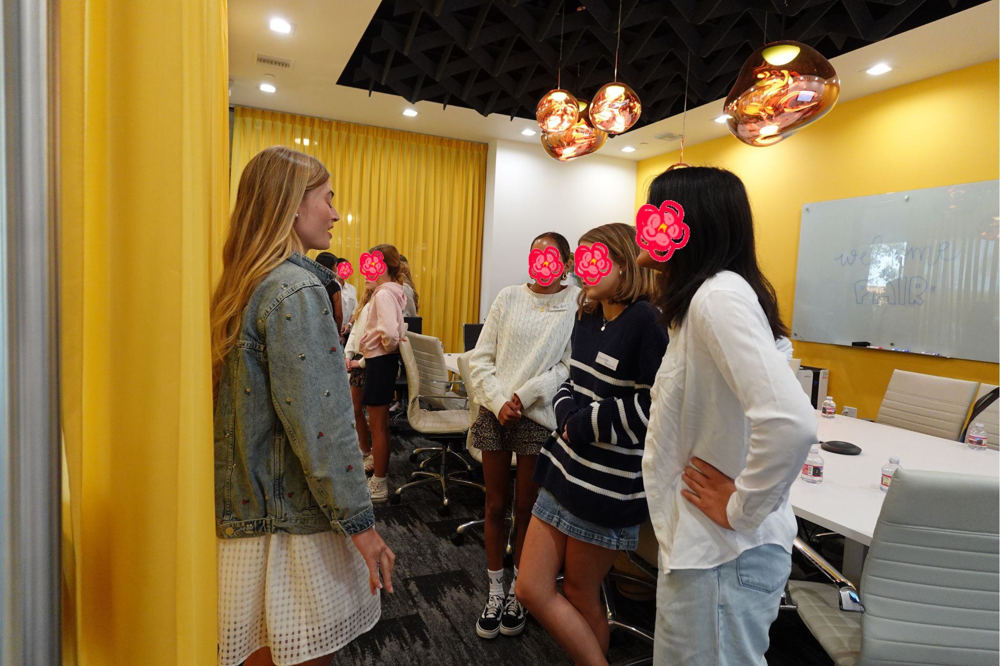
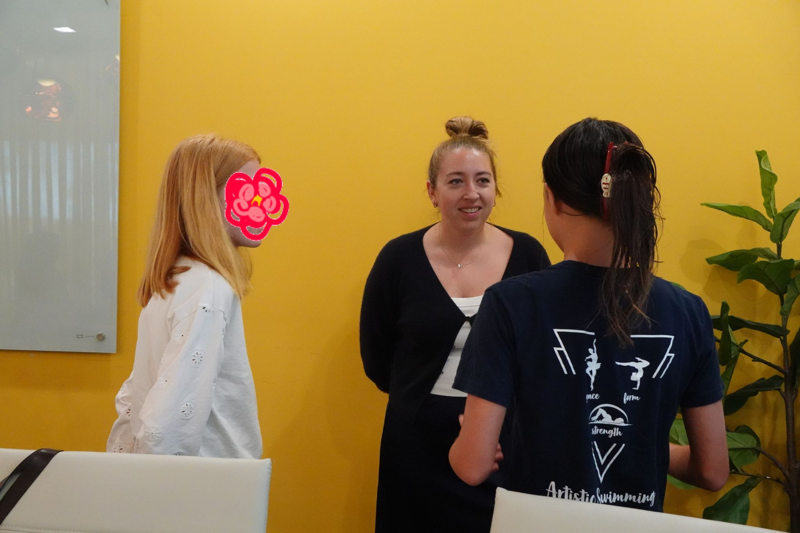
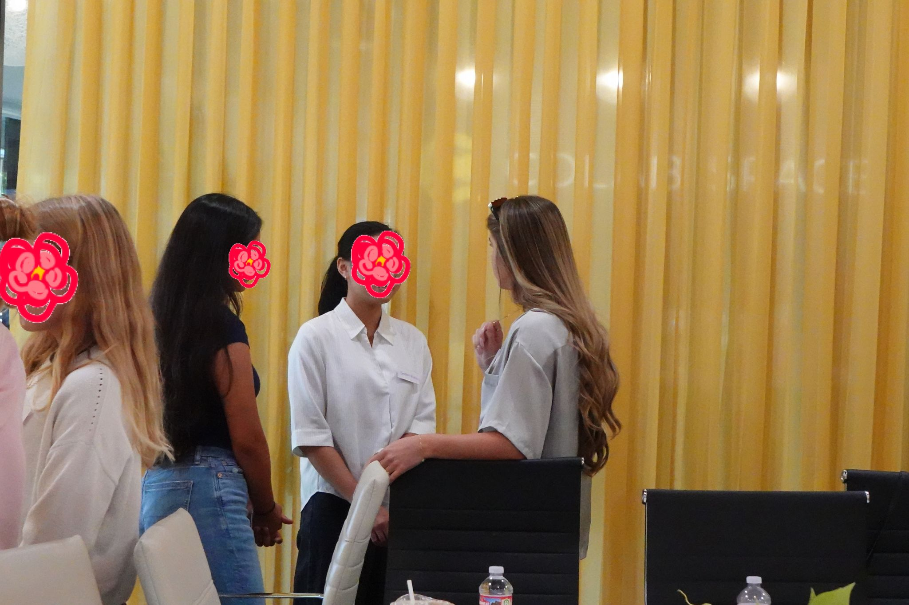
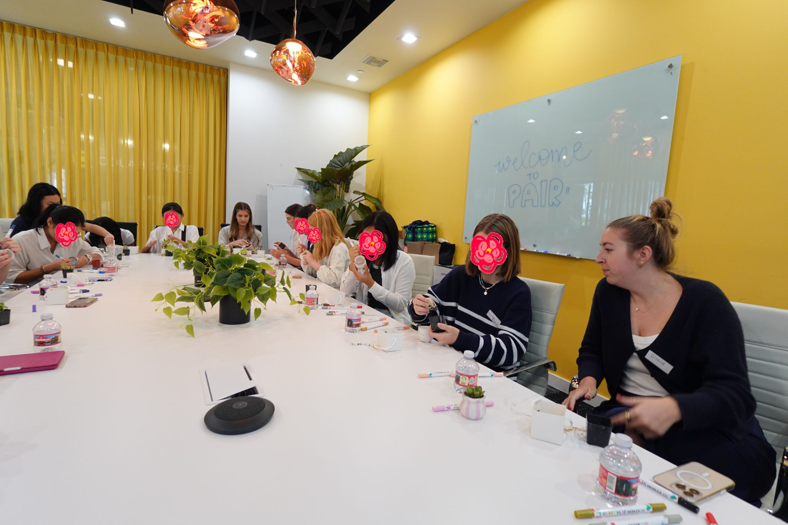
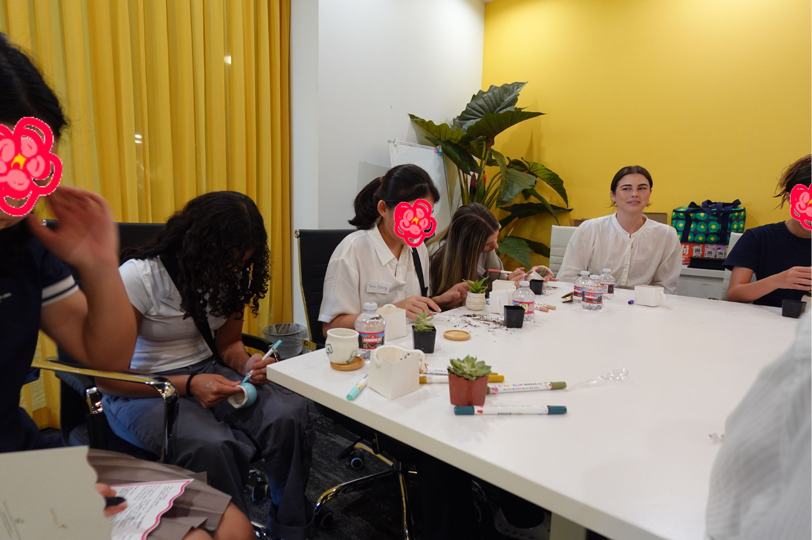
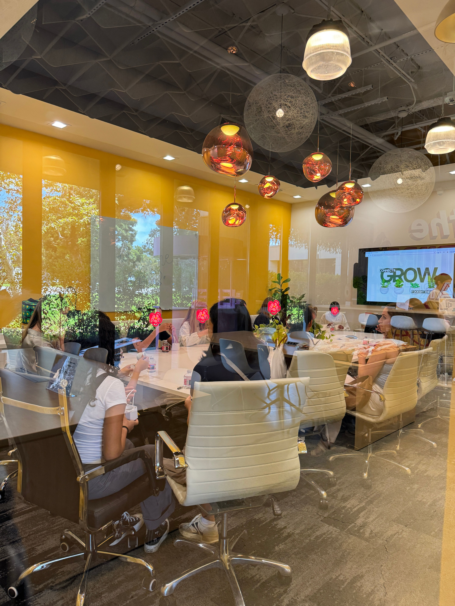

PAIR 2025
Our inaugural event!

PAIR '25 brought together middle and high school girls and professional women mentors for a full day of career exploration.
The day kicked off with an introduction to PAIR, followed by a "Pitch Yourself" activity — mentees and mentors worked in small groups to craft their own personal pitch, then rotated around the room to practice it live with each other.
From there, the day moved into the basics of professional connection — a coffee chat workshop on business casual etiquette and how to write a polished follow-up email, paired with a short discussion on how to ask thoughtful questions.
Mentees put those skills to immediate use during a mentor Q&A, asking questions like how each mentor knew their field was the right fit for them.
From there, the day moved into the basics of professional connection — a coffee chat workshop on business casual etiquette and how to write a polished follow-up email, paired with a short discussion on how to ask thoughtful questions.
Mentees put those skills to immediate use during a mentor Q&A, asking questions like how each mentor knew their field was the right fit for them.
The energy picked up with speed networking, where mentors rotated through small mentee groups for quick, high-energy rounds of conversation and questions, giving every mentee a chance to connect one-on-one with multiple mentors.





To close out the day, mentees and mentors paired up for a hands-on planting activity, potting succulents together as a relaxed, creative way to wind down before lunch and farewell.



From those who joined us:
I loved learning about how to write different kinds of emails, networking, and how to be prepared for an interview.
Mentee, PAIR '25
She has never said 'I want to do it again' like she has about your PAIR event with such excitement and admiration.
Parent of mentee, PAIR '25
I've never learned interpersonal skills at such depth before. It was extremely eye-opening and helpful.
Mentee, PAIR '25
PAIR '25 was only our first step. We can't wait to continue growing together.